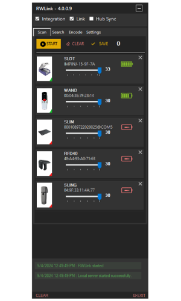

01 · RETAIL
Retailers
Bring speed and confidence to store-level inventory counting, item search and verification without turning the jewellery floor into a warehouse.
Daily stock countsFast item searchIssue & return verification


02 · WHOLESALE
Wholesalers
Support high-volume jewellery inventory movement with RFID-assisted counting, verification and dispatch workflows designed for operational control.
High-volume countingDispatch verificationERP-connected workflows


03 · DIAMONDS
Diamantaires
Purpose-built workflows for diamond packet inventory, movement and verification — where accuracy and traceability matter at every hand-off.
Packet identificationInventory movementVerification & search


Not sure what fits?
Describe the problem. We’ll map the workflow.
The Irys Solution Finder turns your operational challenge into a recommended RFID setup and a clear next step.